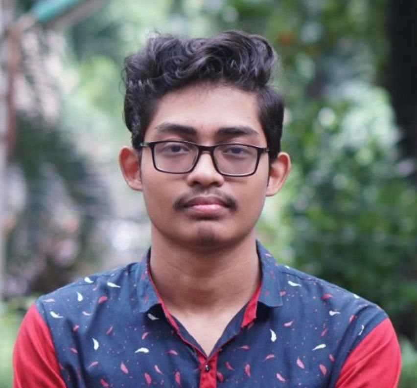

Mohammad Al Hosan Kanon
Semiconductor devices, electronic materials, and first-principles simulation of 2D heterostructures
Currently researching TCAD-based semiconductor devices, with a background in first-principles (DFT) studies of 2D van der Waals heterostructures.

About
I graduated from the Department of EEE at BUET (Dec 2021 to June 2026) with a CGPA of 3.78/4.00, including 4.00/4.00 in my senior year.
My main work is first-principles DFT of van der Waals heterostructures (Quantum ESPRESSO) and TCAD simulation of nanoscale transistors (Silvaco). Alongside this I have worked on analog/RF design, digital VLSI flows, embedded systems, and applied machine learning.
Research
Schottky-to-Ohmic Contact Modulation in Graphene/Janus MoSeTe van der Waals Heterostructures via Electric Field and Biaxial Strain: A First-Principles Study
Supervisor: Prof. Dr. Sharif Mohammad Mominuzzaman, Professor and Head, Department of EEE, BUET
- Identified multiple independent pathways to a fully Ohmic Graphene/MoSeTe contact by tuning the Schottky barrier with electric field and biaxial strain.
- Proposed a 2D field-effect transistor architecture that uses the tunable contact behavior.
- A companion study on the 1T-NbS2/Janus 2H-MoSeTe heterostructure is submitted to Nanoscale Advances.
Mitigation of Short-Channel Effects in 20 nm Double-Gate MOSFETs via Step Oxide, Dual-Material Gate, and Halo Doping
Supervisor: Prof. Dr. Sharif Mohammad Mominuzzaman
- Achieved a 60% reduction in DIBL and a nearly sixfold improvement in ION/IOFF using step-oxide, dual-material-gate, and halo-doping engineering (Silvaco TCAD).
Publications
Journal
Schottky-to-Ohmic Contact Modulation in 1T-NbS2/Janus 2H-MoSeTe van der Waals Heterostructures via Electric Field and Biaxial Strain: A First-Principles Studyunder review
Conference: devices, circuits, and VLSI
Mitigation of Short-Channel Effects in 20 nm Double-Gate MOSFETs via Step Oxide, Dual-Material Gate, and Halo Dopingunder review
Design and Simulation of a Class-A Common-Emitter RF Power Amplifier for the 433 MHz ISM Band in Cadence Virtuoso
Synthesis Constraint Sweep and Physical Implementation of a Parameterized MAC Unit: Cross-Toolchain Validation on Commercial 45 nm and Open-Source 130 nm Processesunder review
Conference: embedded systems and applied machine learning
IoT-Based Real-Time Monitoring and Preservation System for Small-Scale Fruit Storage
Bridging Spectral Specificity and Semantic Generalization for Respiratory Sound Classification: A Comparative Study of MFCCs and Augmented YAMNet Embeddings
Machine Learning-Based Optical Quality Classification of LEDs Using a Low-Cost Optical Characterization Systemunder review
Selected projects
RTL-to-GDSII implementation of an optimised MAC unit
Parameterized multiply-accumulate unit taken from RTL to GDSII on two flows: commercial Cadence Genus/Innovus (GPDK045, 45 nm) and open-source OpenROAD (IHP SG13G2, 130 nm). Extended into the ICECE 2026 paper above.
SystemVerilog, Cadence Genus/Innovus, OpenROADOptical quality classification of LEDs
Low-cost measurement setup with a BPW34 photodiode and TCS34725 sensor on Arduino, feeding feature-engineered KNN and Random Forest classifiers, with a Streamlit interface. Extended into the ICECE 2026 paper above.
Python (scikit-learn, pandas), Streamlit, Arduino, PySerialElectrical services design, 10-storey residential building
Load estimation, wiring, and distribution design for a multi-storied residential building, drawn in AutoCAD.
AutoCAD, load estimation, distribution designClass-A RF power amplifier, 433 MHz
Cadence Virtuoso (90 nm gpdk090): 10.11 dB gain, 18.01 dBm Psat, 7.52% PAE, S11 of about −33.5 dB.
Cadence Virtuoso, RF design, QUCS StudioGitHub
IoT fruit storage monitor
Arduino Mega with ESP8266, DHT22 and MQ135 sensing, relay-driven Peltier cooling and misting, cloud logging with remote override.
Embedded systems, IoTGitHub
Fast-decoupled load flow
MATLAB implementation on IEEE 4 to 30 bus systems; faster convergence than Newton–Raphson at comparable accuracy.
MATLAB, power systemsUART in Verilog on FPGA
Moore FSM transmitter and receiver with parity checking, verified by testbench and demonstrated on CPLD/FPGA hardware.
Verilog, FPGAAwards, skills, and service
Awards and scholarships
Technical skills
- Materials and device simulation
- Quantum ESPRESSO, Silvaco TCAD, Materials Studio, VESTA
- EDA and circuit design
- Cadence tools, Quartus, Proteus, OrCAD PSpice, LTSpice
- Hardware and programming
- FPGA, Arduino, STM32; Python, MATLAB, C/C++, Verilog/SystemVerilog
- Documentation
- LaTeX (Overleaf, TeXstudio), MS Word, MS PowerPoint
Peer review
Internship
Language proficiency